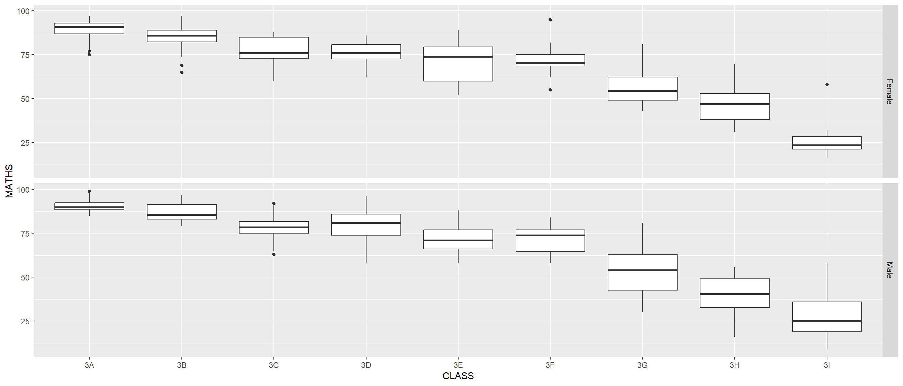

pacman::p_load(tidyverse)Hands-On Exercise 1 - Data Visualisation with ggplot2
Lesson 1 - Introduction to Visual Analytics
1. OVERVIEW
This study explores approaches for data visualisation with tidyverse package functions.
2. R PACKAGE REQUIRED
2.1 Load R Packages
3. DATA PREPARATION
3.1 Acquire Data Source
This study will be based on fictitious data set provided with this lesson.
3.2 Import Data
3.2.1 Import Data
Involved two (2) steps : import & inspect imported data set.
The import step also includes the problems( ) function to flag any parsing error.
exam_data <- read_csv("data/Exam_data.csv")
problems(exam_data)# A tibble: 0 × 5
# ℹ 5 variables: row <int>, col <int>, expected <chr>, actual <chr>, file <chr>3.2.2 Inspect Missing Value
Show the code
skimr::skim(exam_data)| Name | exam_data |
| Number of rows | 322 |
| Number of columns | 7 |
| _______________________ | |
| Column type frequency: | |
| character | 4 |
| numeric | 3 |
| ________________________ | |
| Group variables | None |
Variable type: character
| skim_variable | n_missing | complete_rate | min | max | empty | n_unique | whitespace |
|---|---|---|---|---|---|---|---|
| ID | 0 | 1 | 10 | 10 | 0 | 322 | 0 |
| CLASS | 0 | 1 | 2 | 2 | 0 | 9 | 0 |
| GENDER | 0 | 1 | 4 | 6 | 0 | 2 | 0 |
| RACE | 0 | 1 | 5 | 7 | 0 | 4 | 0 |
Variable type: numeric
| skim_variable | n_missing | complete_rate | mean | sd | p0 | p25 | p50 | p75 | p100 | hist |
|---|---|---|---|---|---|---|---|---|---|---|
| ENGLISH | 0 | 1 | 67.18 | 14.69 | 21 | 59.00 | 70 | 78.00 | 96 | ▁▂▅▇▃ |
| MATHS | 0 | 1 | 69.33 | 19.98 | 9 | 58.00 | 74 | 85.00 | 99 | ▁▂▃▇▇ |
| SCIENCE | 0 | 1 | 61.16 | 18.18 | 15 | 49.25 | 65 | 74.75 | 96 | ▂▃▆▇▃ |
4. DATA VISUALISATION
4.1 Compare Charts by Different R Packages
Below sections compare histogram plot with R graphics and ggplot2 packages.
hist(exam_data$MATHS)
ggplot(data = exam_data,
aes(x = MATHS)) +
geom_histogram(bins = 10,
boundary = 100,
color = "black",
fill = "grey") +
ggtitle("Distribution of Maths scores")
4.2 Explore ggplot2 Code Structures
Below are the 3 steps to plot with ggplot2 functions :
Step 1 to create a base for ggplot Object initialisation.
Step 2 to introduce aesthetic mappings.
Step 3 to add geometric objects.
ggplot(data = exam_data,
aes(x = RACE)) +
geom_bar()
ggplot(data = exam_data,
aes(x = RACE))ggplot(data = exam_data)
4.3 Explore Other Chart Types
4.3.1 Dot Chart
The width of a dot corresponds to the bin width (or maximum width, depending on the binning algorithm).
dots are stacked.
each dot representing one observation.
ggplot(data = exam_data,
aes(x = MATHS)) +
geom_dotplot(binwidth = 1,
dotsize = 0.5)
Remarks :
The scale for y-axis is misleading.
Y-axis is hidden by setting it to “NULL”.
ggplot(data = exam_data,
aes(x = MATHS)) +
geom_dotplot(binwidth = 3,
dotsize = 0.5) +
scale_y_continuous(NULL,
breaks = NULL) 4.3.2 Histogram
Note that the default bin is 30.
Show the code
ggplot(data = exam_data,
aes(x = MATHS)) +
geom_histogram() Show the code
ggplot(data = exam_data,
aes(x = MATHS)) +
geom_histogram(bins = 20,
color = "black",
fill = "light blue") 
Show the code
ggplot(data = exam_data,
aes(x = MATHS,
fill = GENDER)) +
geom_histogram(bins = 20,
color = "grey30")
4.3.3 Density Chart
Show the code
ggplot(data = exam_data,
aes(x = MATHS)) +
geom_density() 
Show the code
ggplot(data = exam_data,
aes(x = MATHS,
colour = GENDER)) +
geom_density()
Show the code
ggplot(data = exam_data,
aes(x = MATHS,
fill = GENDER)) +
geom_density()
4.3.4 Box Plot
Show the code
ggplot(data = exam_data,
aes(y = MATHS,
x = GENDER)) +
geom_boxplot() 
Show the code
ggplot(data = exam_data,
aes(y = MATHS,
x = GENDER)) +
geom_boxplot(notch = TRUE)Show the code
ggplot(data = exam_data,
aes(y = MATHS,
x = GENDER)) +
geom_boxplot() +
geom_point(position = "jitter",
size = 0.5)
4.3.5 Violin Chart
Show the code
ggplot(data = exam_data,
aes(y = MATHS,
x = GENDER)) +
geom_violin()
Show the code
ggplot(data = exam_data,
aes(y = MATHS,
x = GENDER)) +
geom_violin(fill = "light blue") +
geom_boxplot(alpha = 0.5) 4.3.6 Point / Scatterplot Chart
Show the code
ggplot(data = exam_data,
aes(x = MATHS,
y = ENGLISH)) +
geom_point() 
4.4 Add Statistical Functions
There are two ways to use these functions :
- add a stat_() function and override the default geom
- add a geom_() function and override the default stat.
4.4.1 Add mean values on the Boxplot
Show the code
ggplot(data = exam_data,
aes(y = MATHS,
x = GENDER)) +
geom_boxplot() +
stat_summary(geom = "point",
fun.y = "mean",
colour = "red",
size = 4) 
Show the code
ggplot(data = exam_data,
aes(y = MATHS,
x = GENDER)) +
geom_boxplot() +
geom_point(stat = "summary",
fun.y = "mean",
colour = "red",
size = 4) 
4.4.2 Add best fit curve on Scatterplot
Show the code
ggplot(data = exam_data,
aes(x = MATHS,
y = ENGLISH)) +
geom_point() +
geom_smooth(size = 0.5)Show the code
ggplot(data = exam_data,
aes(x = MATHS,
y = ENGLISH)) +
geom_point() +
geom_smooth(method = lm,
size = 0.5)4.5 Trellis Plot
A facets plot, also known as a trellis plot, displays a different subset of the data. There are 2 types of facets, namely facet wrap and facet grid.
Show the code
ggplot(data = exam_data,
aes(x = MATHS)) +
geom_histogram(bins = 20) +
facet_wrap(~ CLASS)
Show the code
ggplot(data = exam_data,
aes(x = MATHS)) +
geom_histogram(bins = 20) +
facet_grid(~ CLASS)4.6 Coordinates
The coordinates functions map the objects’ position onto the plot’s plane. Below are some common coordinate systems :
coord_cartesian(): the default Cartesian coordinate systems. Setting limits thereof will zoom the plot but will not change the underlying data.coord_flip(): a Cartesian system with the x and y flipped.coord_fixed(): a Cartesian system with a “fixed” aspect ratio expressed as y / x (e.g. 1.78 for a “widescreen” plot).coord_quickmap(): a coordinate system that approximates a good aspect ratio for maps.- note : this is suitable when the plot involve smaller areas closer to the equator.
4.6.1. Flip the Chart
Show the code
ggplot(data = exam_data,
aes(x = RACE)) +
geom_bar() +
coord_flip()
4.6.2 Change range for y- & x-axis
Show the code
ggplot(data = exam_data,
aes(x = MATHS,
y = ENGLISH)) +
geom_point() +
geom_smooth(method = lm,
size = 0.5) +
coord_cartesian(xlim = c(0, 100),
ylim = c(0, 100))
5. CONTROLS OF NON-DATA PLOT ELEMENTS
Following are some of the elements :
Background colour, size of fonts, grid lines, colour of labels
Built-in themes include :
theme_gray()(default)
5.1 Explore Themes
Show the code
ggplot(data = exam_data,
aes(x = RACE)) +
geom_bar() +
coord_flip() +
theme_gray()
Show the code
ggplot(data = exam_data,
aes(x = RACE)) +
geom_bar() +
coord_flip() +
theme_dark()Show the code
ggplot(data = exam_data,
aes(x = RACE)) +
geom_bar() +
coord_flip() +
theme_light()Show the code
ggplot(data = exam_data,
aes(x = RACE)) +
geom_bar() +
coord_flip() +
theme_classic()
Show the code
ggplot(data = exam_data,
aes(x = RACE)) +
geom_bar() +
coord_flip() +
theme_minimal()Show the code
ggplot(data = exam_data,
aes(x = RACE)) +
geom_bar() +
coord_flip() +
theme_bw()Show the code
ggplot(data = exam_data,
aes(x = RACE)) +
geom_bar() +
coord_flip() +
theme_void()
Show the code
ggplot(data = exam_data,
aes(x = RACE)) +
geom_bar() +
coord_flip() +
theme_test()
6. DATAVIZ ENHANCEMENT
This section explores various enhancements to communicate data visually effectively.
6.1 Bar Chart
A simple vertical bar chart for frequency analysis.
6.1.1 Evaluate original bar chart
Show the code
ggplot(data = exam_data,
aes(x = RACE)) +
geom_bar()Lecturer’s input :
Y-axis label is not clear (i.e. count).
To support effective comparison, the bars should be sorted by their respective frequencies.
This is a static graph. So, the frequency value is needed to provide more context.
6.1.2 Enhance bar chart
6.1.2.1 Derive descriptive statistic
First understand the variable.
Show the code
questionr::freq(exam_data$RACE) n % val%
Chinese 193 59.9 59.9
Indian 12 3.7 3.7
Malay 108 33.5 33.5
Others 9 2.8 2.86.1.2.2 Revise bar chart
Revised with fct_reorder( ) function.
exam_data %>%
group_by(RACE) %>%
summarise(count = n()) %>%
rename(race = RACE) %>%
mutate(pct = scales::percent(count/sum(count)),
res = str_c(count,
", ",
pct)) %>%
ggplot(aes(fct_reorder(race,
-count),
y = count)) +
geom_bar(stat = "identity") +
labs(x = "Race",
y = "No. of\nPupils",
title = "Primary 3 Students By Race",
subtitle = "Students from a local school") +
theme(axis.title.y = element_text(angle = 0,
size = 10),
axis.title.x = element_text(size = 10),
axis.text.x = element_text(size = 10),
axis.text.y = element_text(size = 10)) +
geom_text(aes(label = res),
vjust = -0.9) +
scale_y_continuous(limits = c(0,210))Revise with recommended function : fct_infreq( ) function.
exam_data %>%
group_by(RACE) %>%
summarise(count = n()) %>%
rename(race = RACE) %>%
mutate(pct = scales::percent(count/sum(count)),
res = str_c(count,
", ",
pct)) %>%
ggplot(aes(fct_infreq(race),
y = count)) +
geom_bar(stat = "identity") +
labs(x = "Race",
y = "No. of\nPupils",
title = "Primary 3 Students By Race",
subtitle = "Students from a local school") +
theme(axis.title.y = element_text(angle = 0,
size = 10),
axis.title.x = element_text(size = 10),
axis.text.x = element_text(size = 10),
axis.text.y = element_text(size = 10)) +
geom_text(aes(label = res),
vjust = -0.9) +
scale_y_continuous(limits = c(0,210))Credit : Learned from Getting things into the right order of Prof. Claus O. Wilke, the author of Fundamentals of Data Visualization
Remarks :
Below is the sample answer provided for this lesson.
Plot above added title and subtitle to set the main context for this plot.
Below are two (2) different sample code chunks provided by this lesson :
ggplot(data = exam_data,
aes(x = reorder(RACE, RACE,
function(x) - length(x)))) +
geom_bar() +
ylim(0, 220) +
geom_text(stat = "count",
aes(label = paste0(..count.., ", ",
round(..count../sum(..count..)*100, 1), "%")),
vjust = -1) +
xlab("Race") +
ylab("No. of\nPupils") +
theme(axis.title.y = element_text(angle = 0))exam_data %>%
mutate(RACE = fct_infreq(RACE)) %>%
ggplot(aes(x = RACE)) +
geom_bar() +
ylim(0,220) +
geom_text(stat="count",
aes(label=paste0(..count.., ", ",
round(..count../sum(..count..)*100, 1), "%")),
vjust = -1) +
xlab("Race") +
ylab("No. of\nPupils") +
theme(axis.title.y = element_text(angle = 0))6.2 Histogram
6.2.1 Evaluate original histogram

Lecturer’s input :
Adding mean and median lines on the histogram plot.
Change fill color and line color
ggplot(data = exam_data,
aes(x = MATHS)) +
geom_histogram(bins = 20,
color = "black",
fill = "light blue") +
geom_vline(xintercept = mean(exam_data$MATHS),
col = "red",
lwd = 1,
linetype = "dashed") +
geom_vline(xintercept = median(exam_data$MATHS),
col = "black",
lwd = 1,
linetype = "dashed") +
annotate("text",
x = mean(exam_data$MATHS)*0.84,
y = mean(exam_data$MATHS)*0.78,
label = paste("Mean =",
round(mean(exam_data$MATHS),2)),
col = "red",
size = 5) +
annotate("text",
x = median(exam_data$MATHS)*0.8,
y = median(exam_data$MATHS)*0.8,
label = paste("Median =",
round(median(exam_data$MATHS),2)),
col = "black",
size = 5)
ggplot(data = exam_data,
aes(x = MATHS)) +
geom_histogram(bins = 20,
color = "black",
fill = "light blue") +
geom_vline(aes
(xintercept = mean(MATHS,
na.rm = T)),
color = "red",
linetype = "dashed",
size = 1) +
geom_vline(aes
(xintercept = median(MATHS,
na.rm = T)),
color = "grey30",
linetype = "dashed",
size = 1)6.3 Trellis Plot for Histogram
6.3.1 Evaluate original trellis plot for histogram

Lecturer’s input :
The histograms above are elegantly designed but not informative. This is because they only reveal the distribution of English scores by gender but without context such as all pupils.
Create a makeover looks similar to the figure below. The background histograms show the distribution of English scores for all pupils.
gendEngl <- exam_data[,-3]
ggplot(exam_data,
aes(x = ENGLISH,
fill = GENDER)) +
geom_histogram(data = gendEngl,
fill = "grey",
alpha = .5) +
geom_histogram(color = "black") +
facet_wrap(~ GENDER) +
theme(axis.title.y = element_text(size = 5),
axis.title.x = element_text(size = 5),
axis.text.x = element_text(size = 5),
axis.text.y = element_text(size = 5),
panel.grid.major = element_line(colour = "steelblue",
size = rel(0.5)),
panel.grid.minor = element_blank()) +
scale_y_continuous(limits = c(0,30)) +
guides(fill = FALSE) +
theme_bw()d <- exam_data
d_bg <- d[, -3]
ggplot(d, aes(x = ENGLISH, fill = GENDER)) +
geom_histogram(data = d_bg, fill = "grey", alpha = .5) +
geom_histogram(colour = "black") +
facet_wrap(~ GENDER) +
guides(fill = FALSE) +
theme_bw()6.4 Scatterplot
6.4.1 Evaluate original scatterplot

Challenge requirement : Add reference lines to make this scatterplot meaningful.
ggplot(data = exam_data,
aes(x = MATHS,
y = ENGLISH)) +
geom_point(size = 1) +
coord_cartesian(xlim = c(0,100),
ylim = c(0,100)) +
theme(axis.title.y = element_text(size = 8),
axis.title.x = element_text(size = 8),
axis.text.x = element_text(size = 6),
axis.text.y = element_text(size = 6)) +
geom_hline(yintercept = 50,
linetype = "dashed",
colour = "grey60",
size = 1) +
geom_vline(xintercept = 50,
linetype = "dashed",
colour = "grey60",
size = 1)
ggplot(data = exam_data,
aes(x = MATHS,
y = ENGLISH)) +
geom_point() +
coord_cartesian(xlim = c(0,100),
ylim = c(0,100)) +
geom_hline(yintercept = 50,
linetype = "dashed",
color = "grey60",
size = 1) +
geom_vline(xintercept = 50,
linetype = "dashed",
color = "grey60",
size = 1)6.5 Trellis Boxplot
This section consists of three different trellis plots.
6.5.1 Facet with 1 row & 2 columns

Challenge requirement : Reproduce similar trellis plot.
ggplot(data = exam_data,
aes(y = MATHS,
x = CLASS)) +
geom_boxplot() +
facet_grid(~ GENDER) +
theme(axis.title.y = element_text(size = 7.5),
axis.title.x = element_text(size = 7.5),
axis.text.x = element_text(size = 7),
axis.text.y = element_text(size = 7))
ggplot(data = exam_data,
aes(y = MATHS,
x = CLASS)) +
geom_boxplot() +
facet_grid(~ GENDER)6.5.2 Facet with 2 rows & 1 column
Challenge requirement : Reproduce similar trellis plot.
ggplot(data = exam_data,
aes(y = MATHS,
x = CLASS)) +
geom_boxplot() +
facet_grid(GENDER ~ CLASS,
scales = "free") +
theme(axis.title.y = element_text(size = 7.5),
axis.title.x = element_text(size = 7.5),
axis.text.x = element_text(size = 7),
axis.text.y = element_text(size = 7),
strip.text.x = element_blank(),
strip.text.y = element_text(size = 7),
panel.spacing.y = unit(1, "mm"),
panel.spacing.x = unit(0, "mm"))
ggplot(data = exam_data,
aes(y = MATHS,
x = CLASS)) +
geom_boxplot() +
facet_grid(GENDER ~.)
6.5.3 Facet with 2 rows & 1 column with different X-axis

Challenge requirement : Reproduce similar trellis plot.
ggplot(data = exam_data,
aes(y = MATHS,
x = GENDER)) +
geom_boxplot() +
facet_grid(GENDER ~ CLASS, scales = "free") +
theme(axis.title.y = element_text(size = 7.5),
axis.title.x = element_text(size = 7.5),
axis.text.x = element_text(size = 6.5),
axis.text.y = element_text(size = 6.5),
strip.text.y = element_text(size = 7),
strip.text.x = element_text(size = 7),
panel.spacing.y = unit(1, "mm"),
panel.spacing.x = unit(1, "mm")
)ggplot(data = exam_data,
aes(y = MATHS, x = GENDER)) +
geom_boxplot() +
facet_grid(GENDER ~ CLASS)6.6 Change Theme

Instruction :
Change the colour of plot panel background of theme_minimal() to light blue and the colour of grid lines to white.
ggplot(data = exam_data,
aes(x = RACE)) +
geom_bar() +
coord_flip() +
theme_minimal() +
theme(
panel.background = element_rect(fill = "lightblue",
colour = "lightblue"),
panel.grid.major = element_line(size = 0.5,
linetype = "solid",
colour = "white"),
axis.title.y = element_text(size = 7.5),
axis.title.x = element_text(size = 7.5),
axis.text.x = element_text(size = 6.5),
axis.text.y = element_text(size = 6.5))ggplot(data = exam_data,
aes(x = RACE)) +
geom_bar() +
coord_flip() +
theme_minimal() +
theme(
panel.background = element_rect(fill = "lightblue",
colour = "lightblue",
size = 0.5,
linetype = "solid"),
panel.grid.major = element_line(size = 0.5,
linetype = 'solid',
colour = "white"),
panel.grid.minor = element_line(size = 0.25,
linetype = 'solid',
colour = "white"))7. REFERENCES
Hadley Wickham (2023) ggplot2: Elegant Graphics for Data Analysis. Online 3rd edition.
Winston Chang (2013) R Graphics Cookbook 2nd edition. Online version.
Healy, Kieran (2019) Data Visualization: A practical introduction. Online version